Connection between Chemistry, mathematics and physics. I stumbled upon them with my own research. But, what drew me to them, in particular, is how their existence created a paradigm shift in all three fields that is still being felt today, it opened people’s eyes and forced them to consider something they previously thought was impossible.
Crystallography
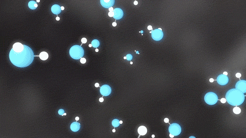
We begin with Chemistry and the study of crystals. Crystllography asks quetions about the structure of crystals and how they are formed. Questions like why do snowflakes have six arms?
We see that molecules fit together in the shape of a hexagonal ring with bonds forming between hydrogen of one molecule and the oxygen of another molecule. As more molecules join the growing crystal, they fit into that repeating shape, which is why you tend to find snowflakes with six arms or six fold symmetry.
What is a crystal?
"A substance in which the constituent atoms, molecules or ions are packed in a regularly ordered three-dimensional pattern."
-Walter White
It is assumed that Nature is efficient and organizes itself for stability. Crystals were therefore believed to be made up of regularly-repeating components in the structure of a lattice in space. With the discovery that crystals diffract x-rays, the method of x-ray diffraction verified that crystals distribute themselves periodically, meaning with translational symmetry.
Crystal structure and symmetry
Only 1,2,3,4 and 6 fold symmetry is possible
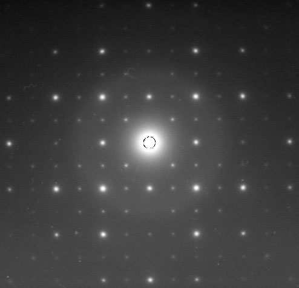
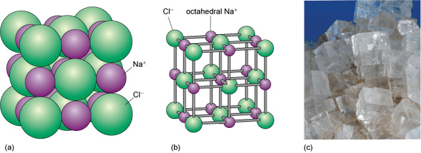
Crystallographers noticed that in the x-ray diffraction patterns they saw, the only possible symmetries of a crystal were 1,2,3,4 and 6. In this case, salt has four fold symmetry, this means that if the pattern were to be rotated by a 1/4 of a turn or 90 degrees, it would look as if it had not been moved at all. The rotated pattern would fall right on top of the original.And in fact, this can be proved mathematically. For two and three dimensional periodic patterns, only 1,2,3,4, and 6 fold symmetries are possible. This came to be called the Crystallographic Restriction and was published in chemistry textbooks far and wide.
Dan Shechtman
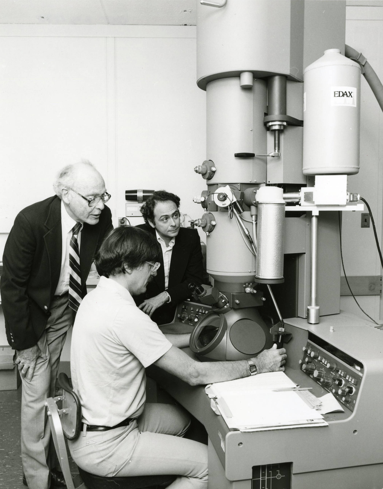
The story begins in 1982 with a chemist from Technion University in Israel. He was on sabbatical at Johns Hopkins University in Pennsylvania studying rapidly solidified aluminum transition metal alloys, when he stumbled upon this bad boy on the right.
Forbidden Symmetry
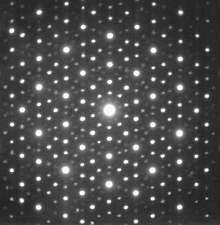
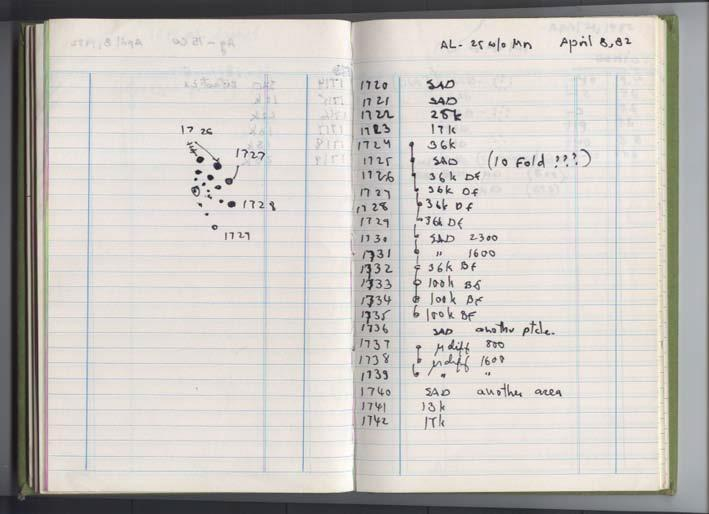
"There can be no such Creature"
When he looked at its diffraction pattern he noticed something remarkable something that did not match any periodically repeated structure. The pattern had 10 fold symmetry.
"There are no quasicrystals, only quasiscientists."
Shechtman’s research group told him to ”go back and read the
textbook” and a couple of days later ”asked him to leave for ’bringing
disgrace’ on the team.”
.
A paradigm shift
"Danny, this material is telling us something and I challenge you to find out what it is." -John W. Cahn
New definition: Any solid having an essentially discrete diffraction diagram.
In spite of all this, he says that the experience was not as traumatic as it sounded. Scientists around the world had quickly replicated Shechtman's discovery and, the field of crystallography was experiencing a paradigm shift. In 1992, the International Union of Crystallography accepted that quasi-periodic materials must exist and altered its definition to the broader "any solid having an essentially discrete diffraction diagram". In some sense this new definition was a cop out, the right definition for a crystl is still being debated today. Quasicrystals remained as mysterious as ever. By his collaboraters, Dan Shechtman was urged to dig deeper.
Meanwhile in mathematics...
In pure mathematics, many mathematicians are very proud to be investigating ideas they deem as not at all useful to the real world, but somehow, regardless of the intentions of mathematicians, these ideas often times have a way of making themselves useful. The idea behind the existence of quasicrystals is an example of just that.
The Domino Problem
In 1961, Wang conjectured that if a finite set of tiles can tile the plane, then they can do so periodically.
He also observed that this conjecture would imply the existence of an algorithm to decide whether a given finite set of tiles can tile the plane.
Tiles in this case could be any closed shapes that may be coloured or patterened in some way. An example of a periodic tiling is shown in the background where the shells and starfish repeat periodically. The interesting thing to me here is that mathematics was no different than chemistry, so focused on periodicity.
In 1966, Wang's student Robert Berger proved that no algorithm for the problem can exist, by showing its equivalence to the Halting problem.
This meant, that there must exist a finite set of tiles that tiles the plane, but only aperiodically.
Aperiodically, means that the tiling has some order, finite patches of the tilling will repeat throughout the tiling, but it does not have translational order. No matter how you move the tiling around, it will never overlap back onto itself. Berger created such a tiling using over 20,000 tiles. He later narrowed the number of tiles to 104. An amateur mathematician, Ammann, decreased the number to 6! And finally, a mathematical physicist was able to find an aperiodic tiling with just two tiles, his name is Roger Penrose.
Berger's 20,000+tiles
Berger 104
Ammann 6
(1974) Penrose 2
Penrose's Aperiodic tilings
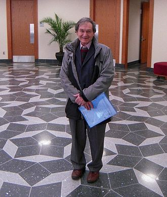
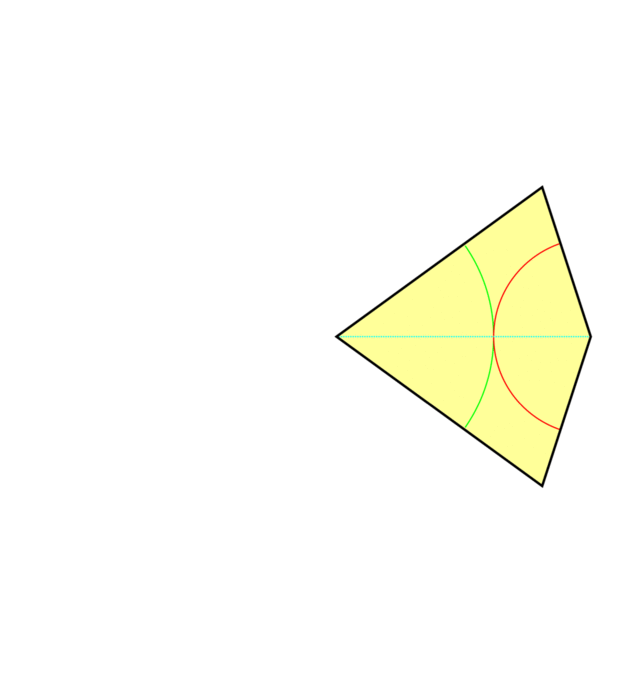
Here we see tilings using two types of rhombuses and then also a kite and dart tiling on the right. When given special markings, they will only tile the plane aperiodically. They have the special property that any finite pattern in the tiling occurs infinitely often throughout the tiling. Some of the patches have a distinct five fold star rotational symmetry. In geometry, the number five is very closely followed by the golden ratio. The number of kite to dart tiles in a finite pattern is given by Fibonacci numbers and so approximates the golden ratio.
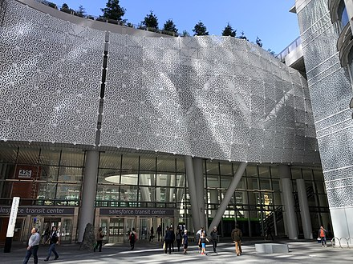
People have become pretty obsessed with the Penrose tiling and have been putting them all over the place. I'm actually one of these people. One of my projects was to lasercut some penrose tiling coasters. Earlier there was an image of Roger Penrose standing on a tiling in the mathematics department at the University of Cambridge. Here is a picture of the facade of a TransBay Railroad center in San Francisco. There was even toilet paper made with the tiling printed on it. Unfortunately, Roger Penrose has a patent on the tiling and as soon as he found out, he sued Kleenex for making it.
How does this tiling link to quasicrystals?
So now you may thinking, what do aperiodic tilings have to do with quasicrystals?
1983 Paul Steinhardt and his student Don Levine were inspired by the Penrose tiling and created a theory on a new kind of matter. Paul Steinhardt, anastrophysicist, was inspired by the Penrose tiling and thought that if the plane can be tiled aperiodically why not space as well? He coined the term quasicrystals and described them as models of aperiodic tilings of three dimensional space. The new theory overturned 200 years of scientific dogma. By changing the set of assumptions, quasicrstals went against all of the previously accepted mathematical theorems about the symmetry of matter. Symmetries once thought to be forbidden for solids are actually possible for quasicrystals, including solids with axes of ten-fold symmetry. Even more surprisingly, this paper was published a year after Dan Shechtman's discovery, the two researchers had been working independendently, Paul was putting together the theory while Dan had gotten experimental evidence to back it up. Steinhardt and his student Levine were shown a preprint of the Shechtman team's paper and immediately recognized that it could be experimental proof of their still-unpublished quasicrystal theory.
You would think that with these two papers accepted that the alloy Dan Shechtman found would be believed and he would be redeemed for the great researcher he is. But no. Both papers were accepted with a lot of doubt. Many theories came about to explain Dan Shechtman's discovery as a mistake. Each counter-theory that came about was disproved but sketicism remained. Dan Shechtman discvered an man made alloy, but it was believed that nature would never construct such a thing. Paul and Dan spent the next 26 years convincing the scientific community that a natural quasicrystal was possible. A little bit before 2009, Paul got lucky. He was contacted by a researcher from Italy with a sample of a rock from Russia whose diffraction pattern had five fold symmetry. Paul could not idenfity the origin and formation and the sample was very small. He sent it to several experts with very disappointing answers, the rock was believed to be slag or waste matter. He decided to take the matter into his own hands, literally. He and a team travelled to the barren arctic tundra in Russia, on an expedition to find another piece of this rock that could be more clearly identified.
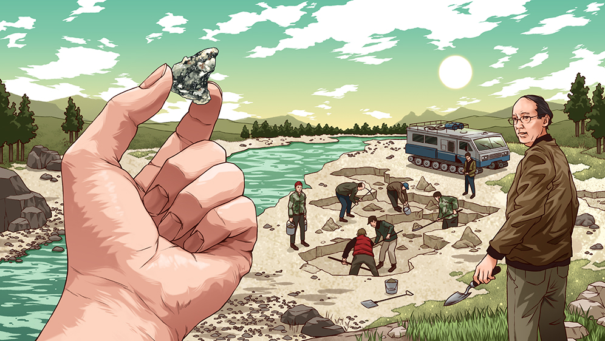
In 2009, his team had found a larger sample in Easern Russia, in the same place the previous sample had been found. It was verified that this quasicrystal had five fold symmetry and was found in the natural world within a meteorite that is 4.5 billion year old. Not only was this an amazing discovery, but this showed that quasicrystals were astable state of matter. Nature was happy to tile things aperiodically.
Khatyrka meteorite
“The quasicrystals and related metallic aluminum minerals found in the meteorite imply the existence of physical process in the early stages of the formation of the solar system that we did not know before; we are still trying to work them out.”
2011 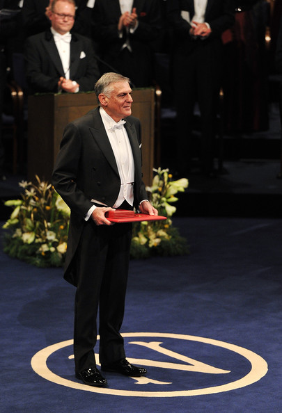
In 2011, Dan SHechtman won the Nobel prize in Chemistry for his discovery. "Dan Shechtman's Nobel prize celebrated not only a fascinating and beautiful discovery, but also dogged determination against the closed-minded ridicule of his peers, including leading scientists of the day." Sometimes it pays to believe in the impossible.